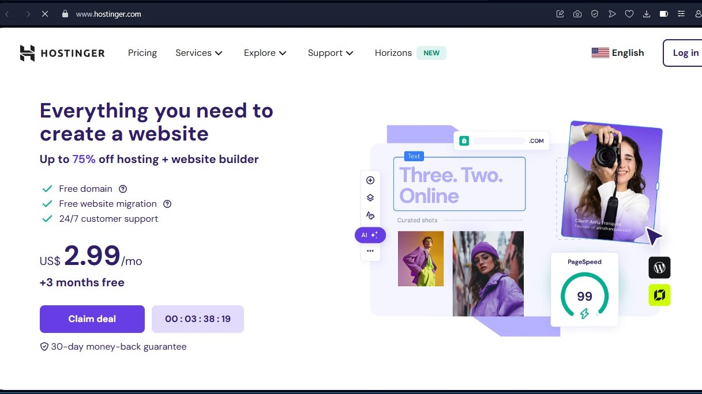
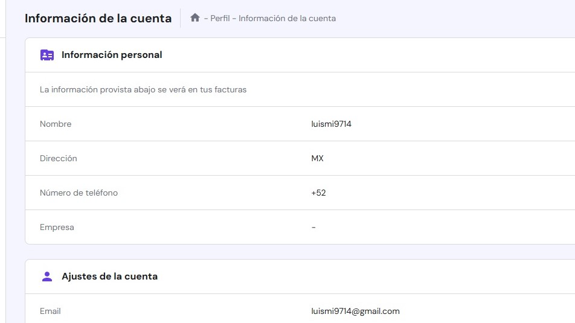

Introducción
En este tutorial, te enseñaremos cómo comprar un dominio web a través de Hostinger y configurarlo para usarlo en Oracle Cloud.

Guía paso a paso para adquirir un dominio y configurarlo para Oracle Cloud utilizando Hostinger.
En este tutorial, te enseñaremos cómo comprar un dominio web a través de Hostinger y configurarlo para usarlo en Oracle Cloud.
Visita el sitio web de Hostinger: Dirígete a la página principal de Hostinger para comenzar.
Regístrate o inicia sesión en tu cuenta de Hostinger.
Busca el dominio que deseas comprar.
Realiza el pago utilizando tu método preferido.
Una vez que hayas comprado tu dominio, es necesario configurarlo en Oracle Cloud para que apunte a tu servidor.
Crea una instancia de Oracle Cloud.
Configura las DNS de tu dominio en el panel de control de Hostinger.
Apunta el dominio a la dirección IP de tu instancia de Oracle Cloud.
En esta sección, te proporcionamos los comandos necesarios para configurar tu dominio en el servidor. Asegúrate de tener acceso a la terminal de tu servidor o a la interfaz de línea de comandos de Oracle Cloud.
Para apuntar tu dominio a la IP de tu instancia en Oracle Cloud, utiliza el siguiente comando para agregar el registro A en la configuración de DNS:
sudo vi /etc/bind/named.conf.local
Añade el siguiente bloque de configuración en el archivo:
zone "tudominio.com" {
type master;
file "/etc/bind/db.tudominio.com";
};
Luego, puedes agregar el registro A para apuntar a la IP de tu instancia:
@ IN A 123.45.67.89
En Hostinger, puedes agregar los registros DNS a través de su panel de control. Aquí te mostramos el comando que puedes utilizar para realizar la actualización:
curl -X POST https://api.hostinger.com/v1/domains/tudominio.com/dns
Una vez que hayas configurado los registros DNS, verifica que todo esté funcionando correctamente con el siguiente comando:
nslookup tudominio.com
Esto debería devolver la IP de tu instancia en Oracle Cloud.
Si deseas cambiar el nombre de tu dominio en el panel de control de Hestia, sigue los siguientes pasos. Ejecuta estos comandos como usuario root en tu servidor de Hestia.
Primero, navega a la carpeta donde se encuentran los scripts de Hestia:
cd /usr/local/hestia/bin/
Luego, ejecuta el siguiente comando para cambiar el nombre de tu dominio a luismi.store (reemplaza "luismi.store" por el nombre de dominio que desees):
v-change-sys-hostname luismi.store
Finalmente, ejecuta el siguiente comando para configurar automáticamente un certificado SSL para tu dominio utilizando Let's Encrypt:
v-add-letsencrypt-host
Este comando generará y asignará un certificado SSL gratuito para tu dominio, asegurando la conexión.